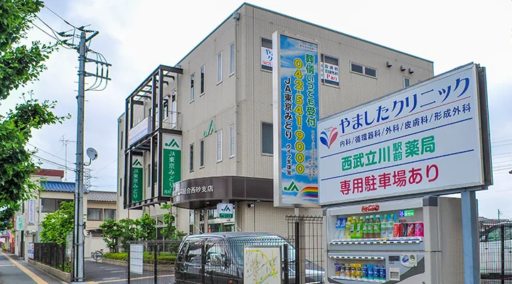

内科・循環器内科・
診療・専門外来
症状や目的に合わせて、各ページで詳しくご案内しています。
ご来院前のご案内
診療時間
| 月 | 火 | 水 | 木 | 金 | 土 | 日 | 祝 | |
|---|---|---|---|---|---|---|---|---|
| 9:00～12:00 | ● | ● | ● | ／ | ● | ● | ／ | ／ |
| 15:00～18:00 | ● | ● | ● | ／ | ● | ／ | ／ | ／ |
※受付は30分前から行っております。予約制ではありません。
※当院受診時、高校生までは保護者同伴でご来院下さい。当院での内科診察は高校生からとなります。
※清水先生（甲状腺専門外来）については完全予約制です。ご予約はお電話にてお問い合せください。
甲状腺外来の診察時間は、午前9:00～12:00 午後14:30～17:00となっております。
診療カレンダー
- 休診日
- 午前休診
- 午後休診
- 甲状腺外来 診察日（午前9:00～12:00 午後14:30～17:00）
- 診療受付時間10:00まで
